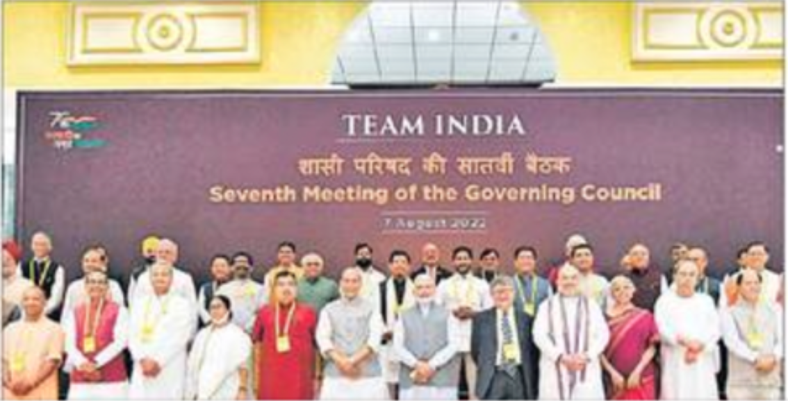
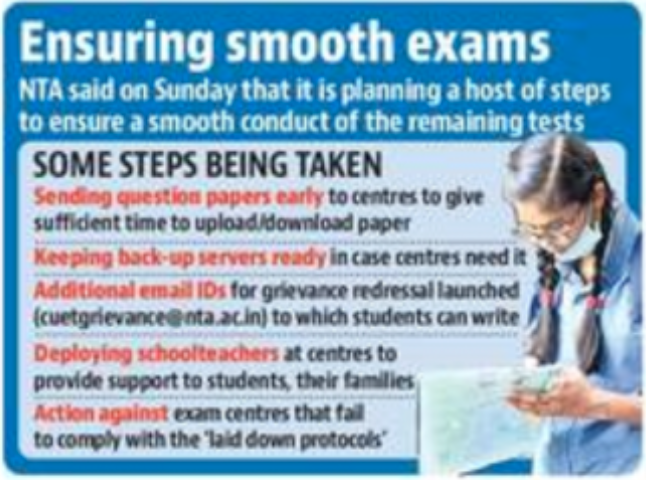

Our collective federalism helped
fight Covid: ModiCrop diversification, reduction of
import dependence in focus at Niti Aayog meeting: Kejriwal,Nitish,KCR, Stalin give it a miss
Risha ChitlangiaNEW DELHI :Prime Minister Narendra Modi on Sunday said that collective efforts
the spirit of collective federalism helped India emerge from the Covid-19 pandemic, a remark he
made at the seventh meet-Affected students will take CUET
Aug 24-28GOVT AGENCIES START TURNING IN
APPLICATIONS TO SELL LIQUOR ACROSS CAPITALHT CorrespondentNEW DELHI :State-run agencies have started applying for liquor permits so that they
can open retail stores by September 1 as the Delhi government reverts to its old system till a
new excise policy is put into place "The application for L-6 vends are being accepted and will be
screened." an official said,without specifying the number of applications the excise department has
received. L-6 is a license given to a retail store run by a government cor- poration in Delhi. The
four Delhi government agencies running the liquor stroes are Delhi State IndustrialFareeha IftikharNEW DELHI :The Com- -mon University Entrance Test(CUET)-UG for candid- ates who
were affected by cancellations last week amid technical glithes will now be conducted from August 24
to 28 ,officials said on Sunday ,even as the NTA is planning a host of steps of ensure a
sm- ooth conduct of the remaining tests. Among the steps being taken by NTA are sending question
papers early to the examination centres ,keeping back-up servers ready.launching an additional grievance redressal email ID adn deploying officials outside
the the centres to pro- in willingful sabotage of the processglitches being reported at the centres during this period according to another
superior. Slowly these engineering exams are making the students feel a lot of pressure in
the pandemic times too !!!.

